With the Times
6 WITH THE TIMES Study trip
The class returned after a one-day study trip. They started at 6 in the morning. It was 9 at night when they came back. See how they spent their time.
69

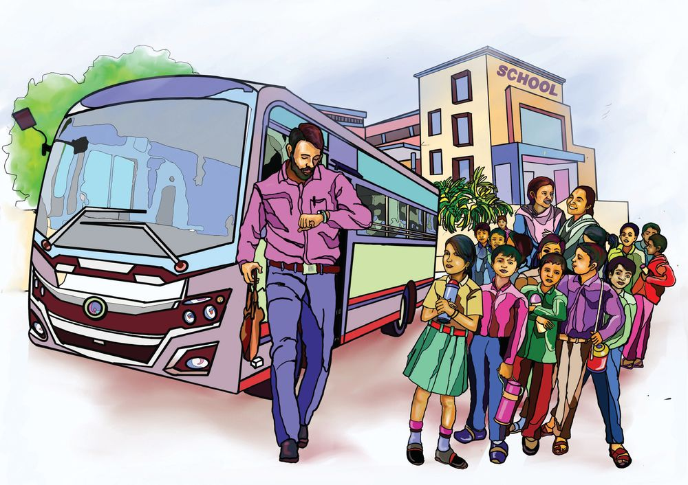
With the Times
6 WITH THE TIMES Study trip
The class returned after a one-day study trip. They started at 6 in the morning. It was 9 at night when they came back. See how they spent their time.
69

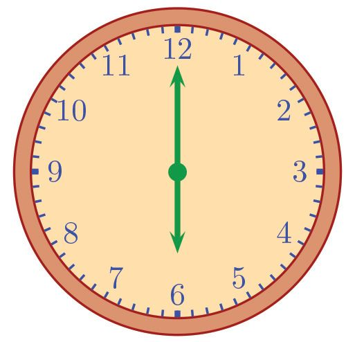
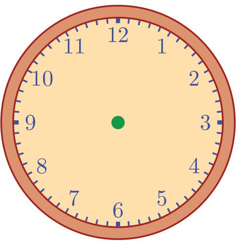
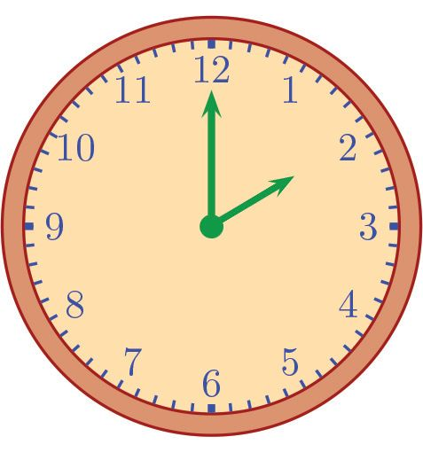
Standard V - Mathematics
Time they started
Breakfast
8 : 00
Zoo visit
8 : 30
Lunch
1 : 30
Planetarium
70

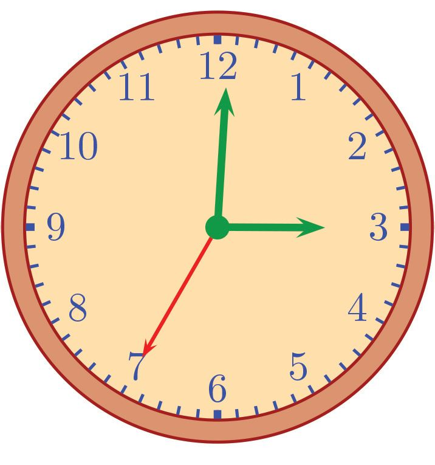
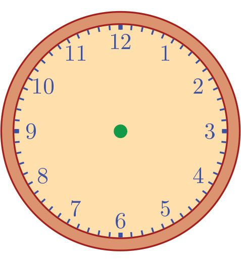
With the Times
5 : 00
Beach
Time they reached back
Hands of a clock
Look at the picture of the clock. How many hands does it have? What does each hand represented? Which hand turns the fastest? How much time does it take to complete one rotation? How much time does the minute hand take to complete one rotation?
71


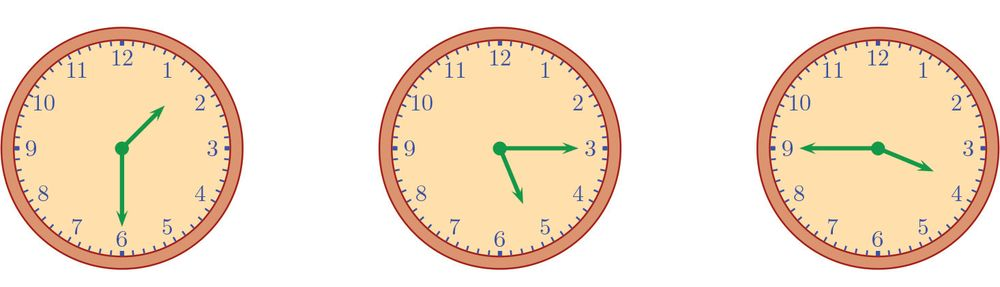
Standard V - Mathematics
What about the hour hand? Clock Hands
Time for a Rotation
Second hand
1 minute
Minute hand
1 hour
Hour hand
12 hours
How much time does the hour hand take to start from 12 and return to 12 ? *
By this time, how many rotations would have the minute hand made?
*
What about the second hand?
*
How many rotations does the hour hand complete in a day? 1 day = 24 hours 1 hour =
minutes
1 minute =
seconds
How many minutes are there in a day?
How many seconds?
Fractions of time What’s the time shown in each clock?
72


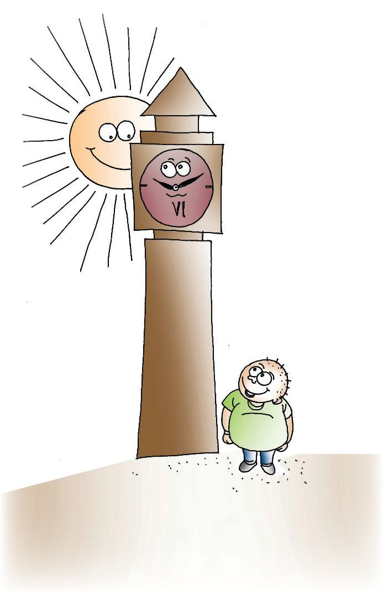
With the Times
The first clock shows 30 minutes past 1; and 30 minutes is half an hour, right? So, we say the time is half past one Similarly the time shown in the second clock can be said to be a quarter past five. The time shown in the third clock can be said to be three quarters past 3 or (more usually) a quarter to 4.
What’s it between these two? Who obeys who?
1. Draw clocks showing the times given below. (i) Quarter past 2 (ii) Quarter to 10 (iii) Half past 11 2. Complete the table below: 120 minutes
2 hours
150 minutes
hours
hours
210 minutes
3 minutes
seconds
1 4
hours and 45 minutes
hours
5 hours 59 minutes and 60 seconds
hours
3. School starts at 10 in the morning and continues to 4 in the afternoon. There are intervals from 11:20 to 11:30 in the morning, 12:50 to 1:45 in the afternoon and 3:10 to 3:20 in the evening. How much time do students get for their studies?
73


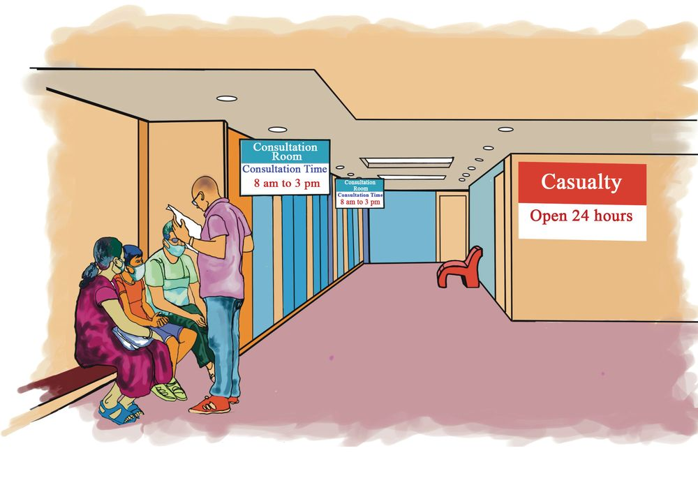
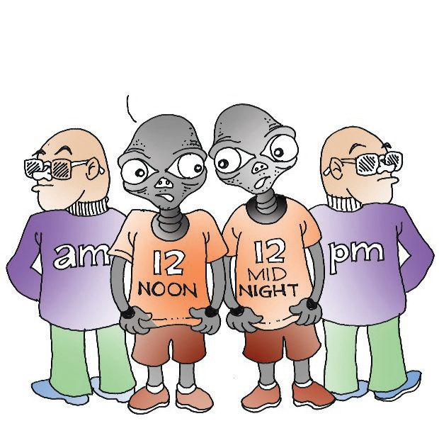
Standard V - Mathematics
Before noon and after noon
You might’ve seen am or pm together with time in many places. What do they mean? 8 am means 8 in the morning and 3 pm means 3 in the afternoon. So, what about 10 am and 5 pm? The time from 12 midnight to 12 noon is denoted using am and the time from 12 noon to 12 midnight is denoted using pm.
So we two don’t belong to either of these gangs !
Complete the table 7 in the morning 7 am 7 in the evening 9 in the night 5 in the evening 11 : 30 in the morning 6 pm 4 am 11 : 30 pm
A person started from Thiruvananthapuram at 8 am on January 7th and reached Hyderabad at 3 pm on January 8th. How long did the journey take?
74

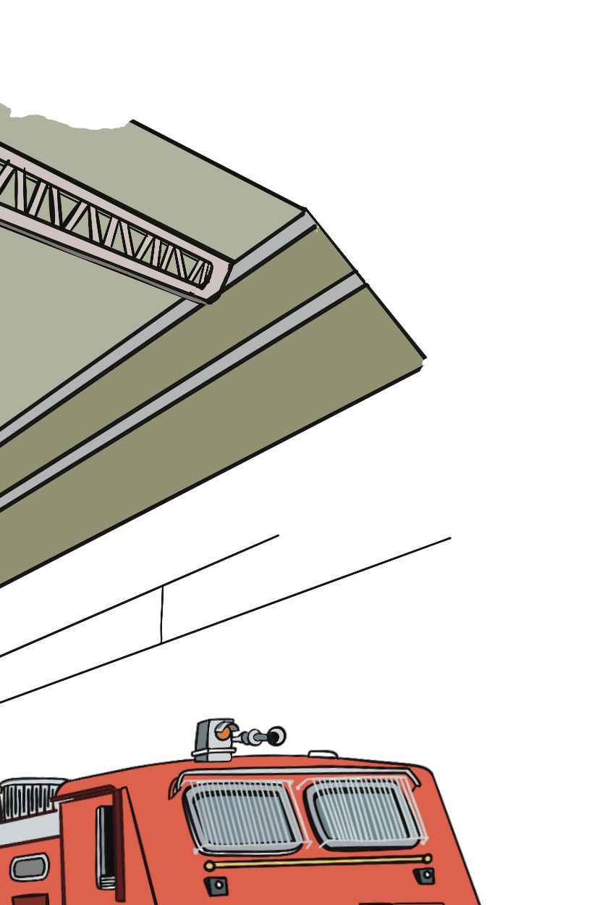
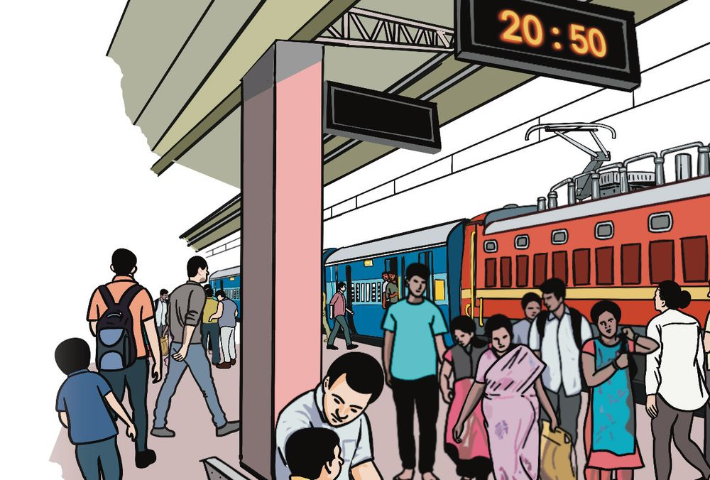
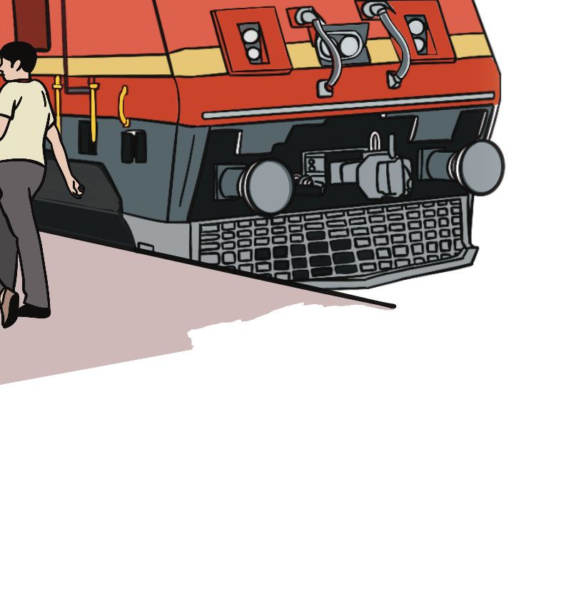
With the Times
An office works from 9 am to 5 pm. One of the employees went out from 11 am to 1:30 pm. How long was the person in the office?
24 hour clock
Passengers, your kind attention please! Mangalore Express scheduled to start at 20:50 is delayed by 20 minutes and only starts at 21:10. We regret the inconvenience caused.
What do they mean, at 21:10 ? Time in the clock is only up to 12, isn’t it?
Railways and some other agencies use a In the 24-hour clock format, 24-hour clock. So, 21:10 means 9 hours for times between 12 to 1 in and 10 minutes after 12 noon; that is, the night, hours are denoted 9:10 in the night. Thus 20:50 is as 0. Thus 00:30 means 20 : 50 12 : 00 = 8 : 50 pm 12:30 am This train reaches Mangaluru next day at 11:30. Is it am or pm? A bus started from Kozhikode at 15:30 and reached Thiruvananthapuram at 2:30. How much time did the journey take? A flight started from Kozhikode at 18:40 and reached Delhi via Mumbai at 00:10. How much time did the journey take?
75


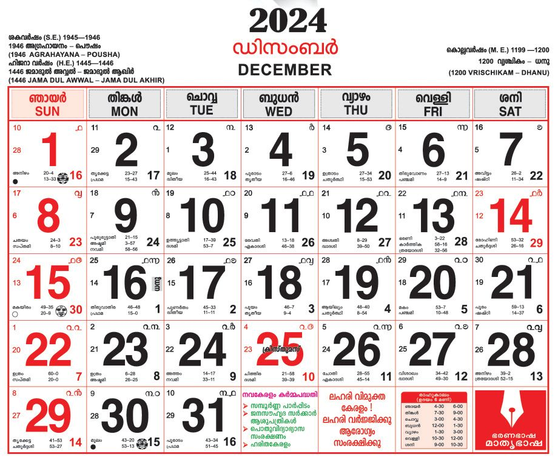
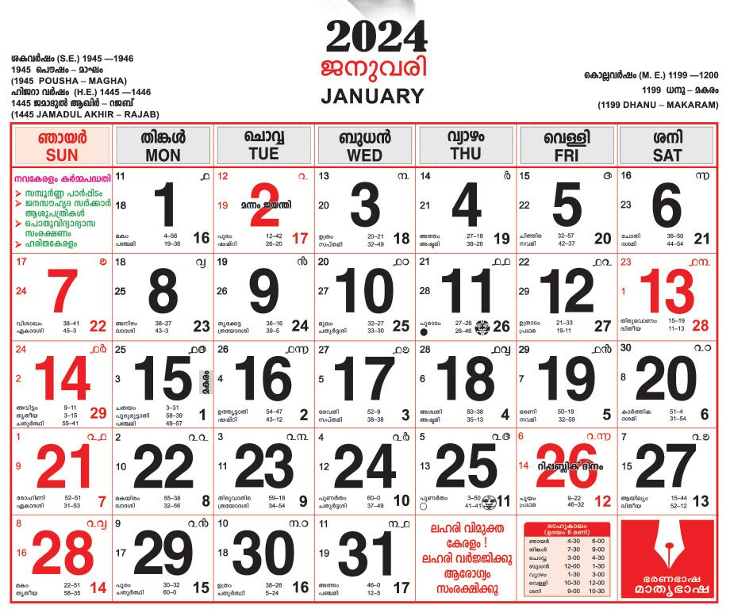
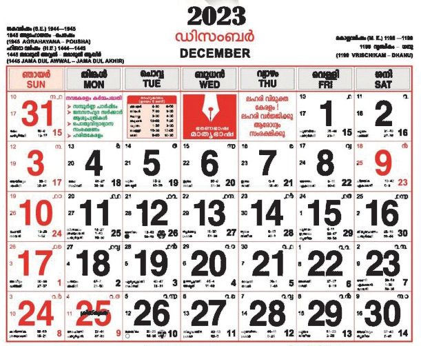
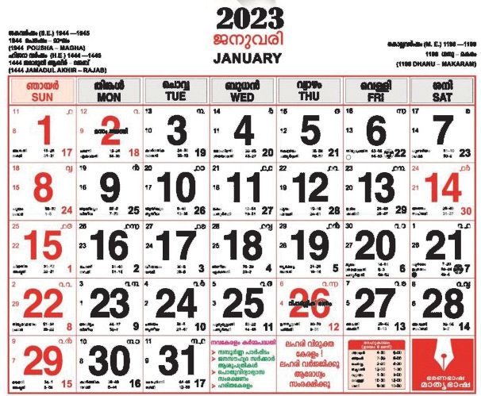
Standard V - Mathematics
Complete this table 24 hour clock
12 hour clock
23 : 30 8 : 00
11 : 30 pm 1 : 30 pm
16 : 25
Before and After In Latin, the time before noon is referred to as ante meridiem and the time after
10 am
noon is post merediem. These are shortened to ‘am’ and ‘pm’ now.
Through the calendar
You star¥ed on Januar® 2nd and ret§red on Januar® 1st ?
76
Late running, about a year!

With the Times
2023 begins and ends on the same day of the week. But not 2024.
2024 has a day more. It’s a leap year !
A year usually has 365 days, which is 52 weeks and one day. A leap year has 366 days, which is 52 weeks and 2 days.
Other calendars What are the different systems shown in calendar sheets?
Gregorian calendar (sometimes called English calendar in our state)
Find the names of the months in each system and write them down. See how the dates according to various systems are placed in your calendar.
Leap year A year is usually the time taken by the Earth to complete one orbit around the sun. This is about 365 days and 6 hours. So, if a year is taken as 365 days, then in 4 years there will be a difference of one day. If this is is continued, after several years, the calculation of seasons will be very much incorrect. As a way out, one day is added every four years to make the length of that year 366 days. Such years are called leap years. The extra day is added to the month of February, so that in a leap year, February has 29 days To check whether some year is a leap year or not, divide it by 4; if there’s no remainder, then it’s a leap year. For example, 2020 is a leap year; and the next leap year is 2024 To make the calculations more precise, adjustments are made. For the years which are beginning of centuries, only those divisible by 2000 are taken as leap years. Thus, for example, 1900 is not a leap year, while 2000 is.
77


Standard V - Mathematics
Look at the calendar for this year. How many days does February have?
Which is the next leap year?
Which months of this year have 5 Mondays?
What ‘panic math’ are you doing ?
Holidays in a leap year!
In a certain year, there were 5 Wednesdays in October, but only 4 Thursdays. What day of the week was the first of October that year? The sum of the dates of two Sundays in a month is 11. What day of the week is the first of that month? How many times each day of the week occurs this year? Which day occurs the most number of times?
78
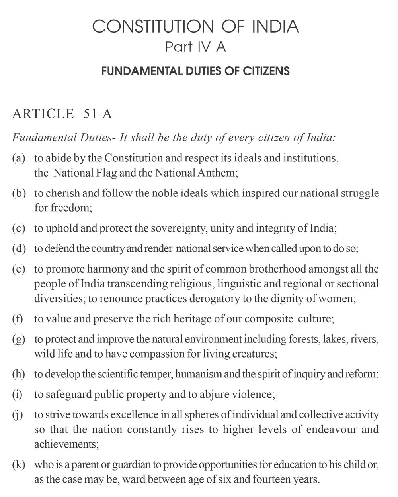